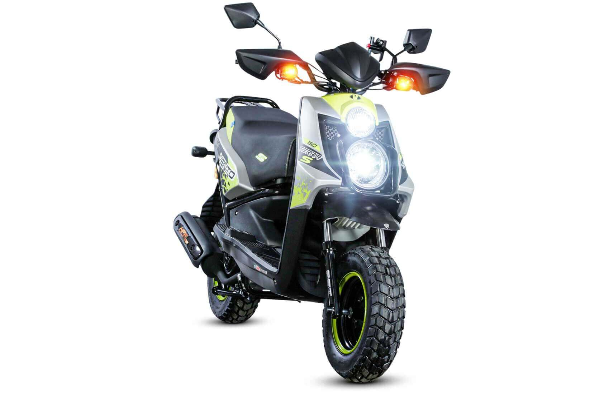

Vento Rocketman 250

Descripción
La Vento Rocketman 250 es una motocicleta de estilo café racer que combina un diseño retro con tecnología moderna. Equipada con un motor de 250 cc, ofrece una experiencia de conducción ágil y cómoda, ideal para desplazamientos urbanos y paseos de fin de semana.
Precio aproximado
$1,873.06 USD
Vento Terra 150 S

Descripción
La Vento Terra 150 S es una scooter versátil de 149 cc, diseñada para ofrecer eficiencia y comodidad en la conducción diaria. Su diseño compacto y moderno la hace ideal para el tráfico urbano, mientras que su motor confiable asegura un rendimiento constante.
Precio aproximado
$1,500 USD
Vento V-Thunder 250
Descripción
La Vento V-Thunder 250 es una cruiser clásica con un motor V-Twin de 250 cc. Diseñada para aquellos que buscan una experiencia de conducción relajada y estilizada, esta motocicleta ofrece comodidad en viajes largos y un diseño atemporal que destaca en la carretera.
Precio aproximado
$3,499 USD